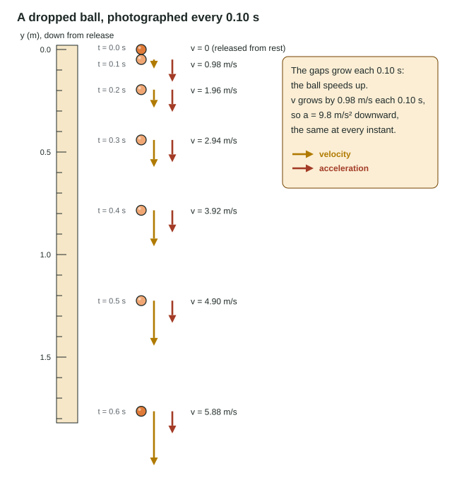

The same motion can be told in five ways: a motion diagram, a position-time graph, a velocity-time graph, an acceleration-time graph and equations, plus plain words. The exam rewards students who can move between them, and it has a whole free-response question, Translation Between Representations, built on that skill. This page shows how the representations connect and gives you the three equations for motion with a constant acceleration.
Motion diagrams
Imagine photographing a cart at equal time intervals and stacking the photos into one picture. That is a motion diagram: dots (or images) for the positions, often with velocity arrows. You read it by the spacing.
- Equal gaps: the cart covers the same distance in each interval, so its velocity is constant.
- Growing gaps: it is speeding up. The acceleration points the same way as the motion.
- Shrinking gaps: it is slowing down. The acceleration points opposite to the motion.
Position-time graphs
A position-time graph (x-t graph) plots where the object is at each moment. Its height is the position; its slope is the velocity, because slope = Δx/Δt.
- A straight line: constant velocity. Steeper means faster; a downward slope means a negative velocity; a horizontal line means the object is at rest.
- A curve: the velocity is changing. The slope at one instant is the slope of the tangent line there. A curve that gets steeper (bending upward, for positive v) means speeding up.
Two lines crossing on an x-t graph means two objects at the same position at the same time, not the same velocity. Compare slopes for velocity.
Velocity-time graphs
A velocity-time graph (v-t graph) carries the most information. Its slope is the acceleration (Δv/Δt), and the area between the graph and the time axis is the displacement, since (m/s) × s = m. Area below the axis counts as negative displacement.
![A cart on a track with a motion diagram of dots every 0.5 s: the dots spread out while it speeds up, are evenly spaced while it coasts, and bunch together while it slows to a stop at 4.0 m. Below, three graphs share a time axis from 0 to 6 s. Position against time: a curve bending upward from 0 to 1.0 m (0 to 2 s), a straight line to 3.0 m (2 to 4 s), then a curve bending down and leveling off at 4.0 m at 6 s; a dashed tangent line shows the slope at 4 s. Velocity against time: a line rising from 0 to 1.0 m/s, flat at 1.0 m/s, then falling to 0; the shaded rectangle from 2 to 4 s has area 1.0 m/s times 2 s = 2.0 m, the displacement. Acceleration against time: +0.5 m/s squared, then 0, then −0.5 m/s squared; the shaded area from 0 to 2 s is the change in velocity, 1.0 m/s. A side column reads: the slope of x-t is velocity, the slope of v-t is acceleration, the area under v-t is displacement, the area under a-t is the change in velocity.](../figures/motion-graphs-stack.svg)
Worked example 1. A bus speeds up from rest to 10. m/s in 5.0 s, cruises at 10. m/s for 8.0 s, then brakes to a stop in 5.0 s, each part with constant acceleration. Find the acceleration in the first part and the total displacement.
Acceleration = slope of v-t = (10. m/s − 0) ÷ 5.0 s = 2.0 m/s².
Displacement = area under v-t: triangle ½(5.0 s)(10. m/s) = 25 m; rectangle (8.0 s)(10. m/s) = 80. m; triangle ½(5.0 s)(10. m/s) = 25 m. Total = 130 m (1.3 × 10² m to two figures).
Acceleration-time graphs
An acceleration-time graph (a-t graph) shows the acceleration at each moment. The area under it is the change in velocity, because (m/s²) × s = m/s. It tells you how much the velocity changed, not what the velocity is: add the starting velocity.
The four rules fit in one sentence: slopes go down the chain, areas go up.
| Graph | Its slope is | The area under it is |
|---|---|---|
| x-t | velocity | (not used) |
| v-t | acceleration | displacement |
| a-t | (not used) | change in velocity |
Constant acceleration: three equations
When the acceleration does not change, the v-t graph is a straight line and three equations describe the motion. They are on the exam's equations sheet, written for the x direction:
| Equation | Leaves out | Use it when |
|---|---|---|
| v = v₀ + at | displacement | no distance is given or asked |
| x = x₀ + v₀t + ½at² | final velocity | the final velocity is not given or asked |
| v² = v₀² + 2a(x − x₀) | time | no time is given or asked |
Where they come from: the first is a = Δv/Δt rearranged. The second is the area under a straight v-t line: a rectangle v₀t plus a triangle ½(at)t. The third comes from eliminating t between the first two.
The method is always the same. List the five quantities (x − x₀, v₀, v, a, t). Mark which you know and which you want. Choose the equation that contains those and leaves out the one you neither know nor want. Choose a positive direction and give every vector its sign.
Worked example 2. A car at 18 m/s brakes with a constant acceleration of −4.5 m/s² (forward positive). How far does it travel while stopping?
Known: v₀ = +18 m/s, v = 0, a = −4.5 m/s². Wanted: Δx. Not known and not wanted: t. So use v² = v₀² + 2aΔx.
0 = (18 m/s)² + 2(−4.5 m/s²)Δx → Δx = 324 m²/s² ÷ 9.0 m/s² = 36 m.
Functional dependence: Δx = v₀²/(2|a|), so twice the speed needs 4 times the braking distance.
Free fall

An object moving under gravity alone, with air resistance negligible, is in free fall. Near Earth every object in free fall has the same constant acceleration, g = 9.8 m/s² downward, whatever its mass. The course often rounds it to 10 m/s², and the exam accepts either; this course uses 9.8 in worked examples and always says which value an item wants.
Free fall includes a ball thrown upward. On the way up it slows by 9.8 m/s each second; at the top its velocity is zero for an instant; on the way down it speeds up by 9.8 m/s each second. The acceleration is 9.8 m/s² downward the whole time, including at the top. If the velocity were not changing at the top, the ball would stay there.
Worked example 3. A ball is thrown straight up at 15 m/s. How high does it rise? Use g = 9.8 m/s² and take up as positive.
At the top v = 0. Known: v₀ = +15 m/s, a = −9.8 m/s². No time, so v² = v₀² + 2aΔy.
0 = (15 m/s)² + 2(−9.8 m/s²)Δy → Δy = 225 ÷ 19.6 = 11 m.
Time to the top: v = v₀ + at → 0 = 15 − 9.8t → t = 1.5 s.
When the acceleration changes
A sprinter leaving the blocks accelerates hard at first, then less, until she runs at a steady top speed. Her v-t graph curves, rising steeply and then flattening. This is nonuniform acceleration. In this course you describe it from the graph and in words (the slope of the v-t graph, so the acceleration, shrinks to zero), but you do not calculate it, and the three equations do not apply.
Translating between representations
A good check is to tell the same story in two representations and compare a specific feature. For a cart that slows down while moving forward: the motion diagram has shrinking gaps; the x-t graph rises with a decreasing slope; the v-t graph is above the axis and slopes down; the a-t graph is below the axis. If one representation disagrees with another, one of them is wrong.